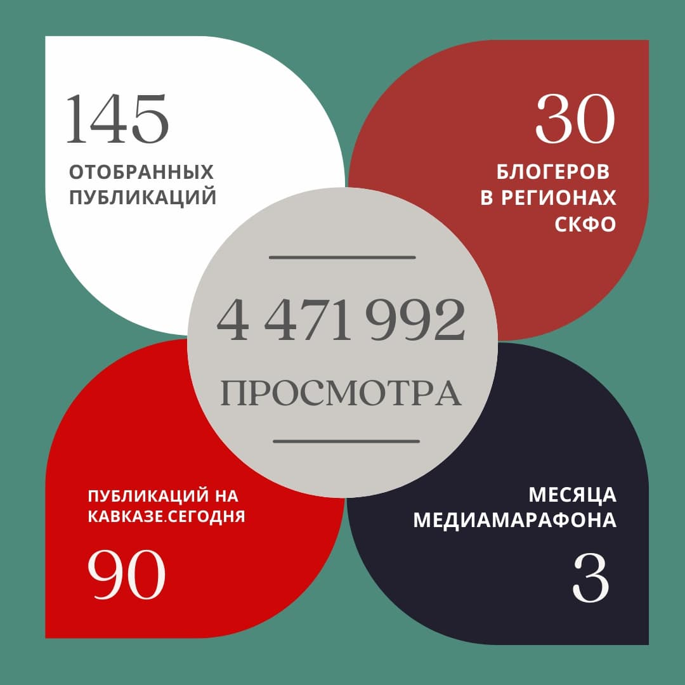
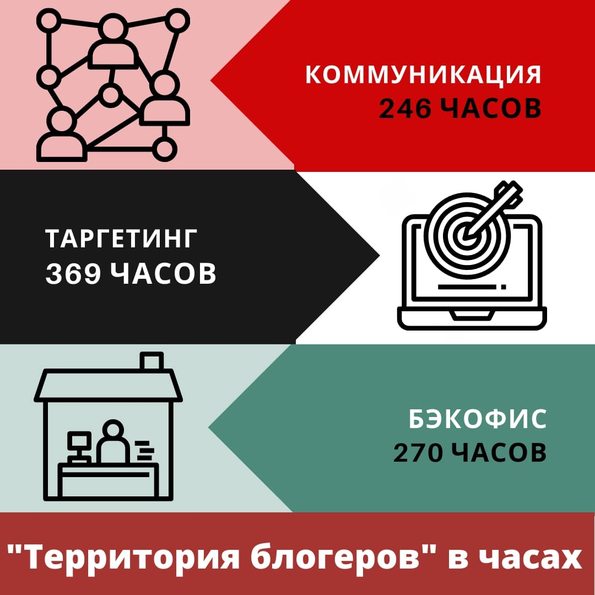
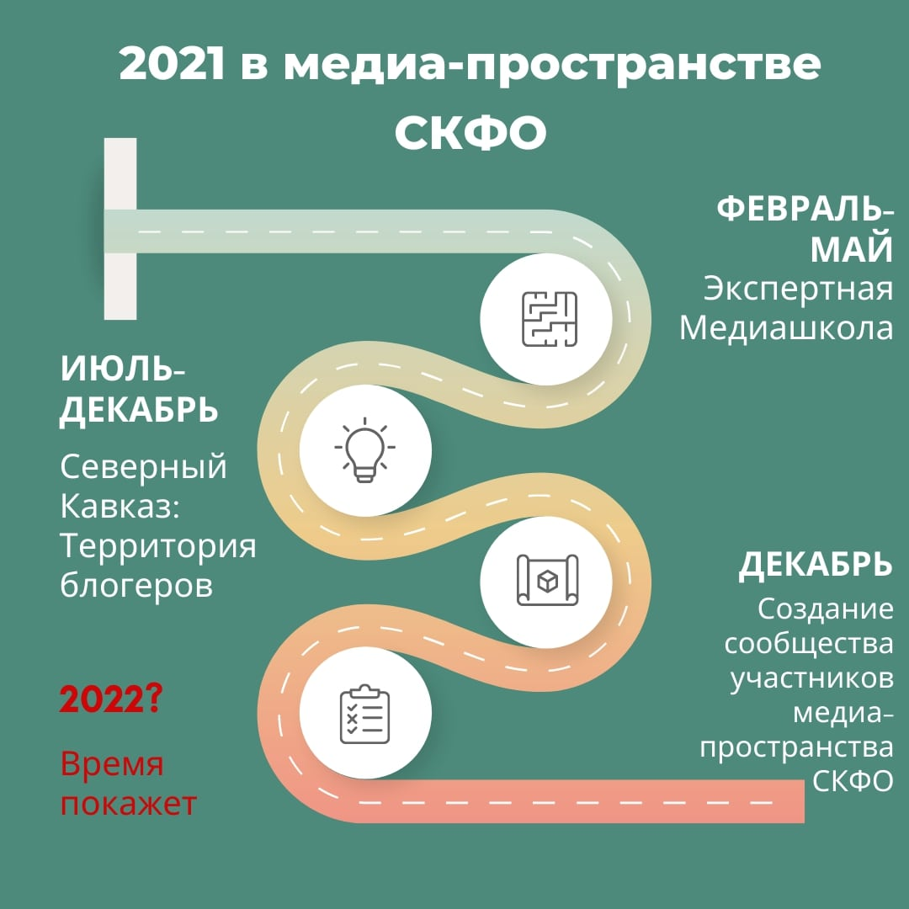
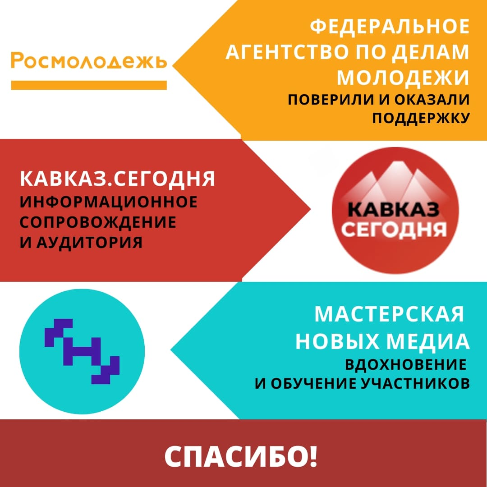

Северный Кавказ: Территория блогеров, итоговые итоги
Медиамарафон можно считать завершенным. Спасибо всем участникам, с кем удалось встретиться лично в Нальчике
Медиамарафон можно считать завершенным. Спасибо всем участникам, с кем удалось встретиться лично в Нальчике. Надеемся увидеться с остальными в следующем году в Пятигорске. Мы идем дальше и приготовили для вас кое-что интересное, но не будем пока открывать карты.
Результаты нашего марафона достигнуты и передостигнуты, участники учены-переучены. В этом посте хочется сказать большое спасибо всем, кто сделал мероприятие: участникам и организаторам (в карточках все труды описаны подробно, в часах).
И, конечно, огромная благодарность всем, кто принял наибольшее участие в развитии блогерства на Северном Кавказе.
Федеральному агентству по делам молодёжи (Росмолодёжь) — за то, что поверили и поддержали нас.
ИА «Кавказ-Сегодня» — за информационное сопровождение, аудиторию и экспертную оценку.
Образовательной программе «Мастерская Новых Медиа» — за обучение блогеров СКФО, в том числе участников нашего марафона. Надеемся на ваше содействие и в будущем году.
Аппарату полномочного представителя Президента РФ в СКФО - за внимание, наставничество и поддержку нашей инициативы.
#Росмолодежь #Росмолгрант #РосмолгрантСКФО #РСВ #грантыРосмолодежи